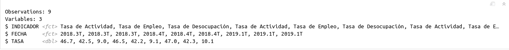

2.1 Explicación
A lo largo de esta clase, trabajaremos con el paquete tidyverse. El mismo agrupa una serie de paquetes que tienen una misma lógica en su diseño y por ende funcionan en armonía.
Entre ellos, usaremos principalmente dplyr y tidyr para realizar transformaciones sobre nuestro set de datos. En una futura clase utilizaremos ggplot para realizar gráficos.
A continuación cargamos la librería a nuestro ambiente. Para ello debe estar previamente instalada en nuestra pc.
library(tidyverse)Para mostrar el funcionamiento básico de tidyverse utilizaremos a modo de ejemplo datos del Informe de Mercado de Trabajo del INDEC.
INDICADOR <- c("Tasa de Actividad", "Tasa de Empleo", "Tasa de Desocupación",
"Tasa de Actividad", "Tasa de Empleo", "Tasa de Desocupación",
"Tasa de Actividad", "Tasa de Empleo", "Tasa de Desocupación")
FECHA <- c("2018.3T", "2018.3T", "2018.3T",
"2018.4T", "2018.4T", "2018.4T",
"2019.1T", "2019.1T", "2019.1T")
TASA <- c(46.7, 42.5, 9,
46.5, 42.2, 9.1,
47, 42.3, 10.1)
Datos <- data.frame(INDICADOR, FECHA, TASA)
Datos## INDICADOR FECHA TASA
## 1 Tasa de Actividad 2018.3T 46.7
## 2 Tasa de Empleo 2018.3T 42.5
## 3 Tasa de Desocupación 2018.3T 9.0
## 4 Tasa de Actividad 2018.4T 46.5
## 5 Tasa de Empleo 2018.4T 42.2
## 6 Tasa de Desocupación 2018.4T 9.1
## 7 Tasa de Actividad 2019.1T 47.0
## 8 Tasa de Empleo 2019.1T 42.3
## 9 Tasa de Desocupación 2019.1T 10.12.1.1 Dplyr
El caracter principal para utilizar este paquete es %>% , pipe (de tubería).
Los %>% toman el set de datos a su izquierda, y los transforman mediante los comandos a su derecha, en los cuales los elementos de la izquierda están implícitos. En otros términos:
\(f(x,y)\) es equivalente a \(x\) %>% \(f(.,y)\)
Veamos las principales funciones que pueden utilizarse con la lógica de este paquete:
2.1.1.1 glimpse
Permite ver la estructura de la tabla. Nos muestra:
- número de filas
- número de columnas
- nombre de las columnas
- tipo de dato de cada columna
- las primeras observaciones de la tabla
glimpse(Datos)
2.1.1.2 filter
Permite filtrar la tabla de acuerdo al cumplimiento de condiciones lógicas.
Datos %>%
filter(TASA > 10 , INDICADOR == "Tasa de Desocupación")## INDICADOR FECHA TASA
## 1 Tasa de Desocupación 2019.1T 10.1Nótese que en este caso al separar con una , las condiciones se exige el cumplimiento de ambas. En caso de desear que se cumpla alguna de las condiciones debe utilizarse el caracter |.
Datos %>%
filter(TASA > 10 | INDICADOR == "Tasa de Desocupación")## INDICADOR FECHA TASA
## 1 Tasa de Actividad 2018.3T 46.7
## 2 Tasa de Empleo 2018.3T 42.5
## 3 Tasa de Desocupación 2018.3T 9.0
## 4 Tasa de Actividad 2018.4T 46.5
## 5 Tasa de Empleo 2018.4T 42.2
## 6 Tasa de Desocupación 2018.4T 9.1
## 7 Tasa de Actividad 2019.1T 47.0
## 8 Tasa de Empleo 2019.1T 42.3
## 9 Tasa de Desocupación 2019.1T 10.12.1.1.3 rename
Permite renombrar una columna de la tabla. Funciona de la siguiente manera:
Data %>% rename(nuevo_nombre = viejo_nombre)
Datos %>%
rename(Periodo = FECHA)## INDICADOR Periodo TASA
## 1 Tasa de Actividad 2018.3T 46.7
## 2 Tasa de Empleo 2018.3T 42.5
## 3 Tasa de Desocupación 2018.3T 9.0
## 4 Tasa de Actividad 2018.4T 46.5
## 5 Tasa de Empleo 2018.4T 42.2
## 6 Tasa de Desocupación 2018.4T 9.1
## 7 Tasa de Actividad 2019.1T 47.0
## 8 Tasa de Empleo 2019.1T 42.3
## 9 Tasa de Desocupación 2019.1T 10.1Nótese que, a diferencia del ejemplo de la función filter donde utilizábamos == para comprobar una condición lógica, en este caso se utiliza sólo un = ya que lo estamos haciendo es asignar un nombre.
2.1.1.4 mutate
Permite agregar una variable a la tabla (especificando el nombre que tomará ésta), que puede ser el resultado de operaciones sobre otras variables de la misma tabla.
En caso de especificar el nombre de una columna existente, el resultado de la operación realizada “sobre-escribirá” la información de la columna con dicho nombre.
Datos <- Datos %>%
mutate(PROPORCION = TASA / 100)
Datos## INDICADOR FECHA TASA PROPORCION
## 1 Tasa de Actividad 2018.3T 46.7 0.467
## 2 Tasa de Empleo 2018.3T 42.5 0.425
## 3 Tasa de Desocupación 2018.3T 9.0 0.090
## 4 Tasa de Actividad 2018.4T 46.5 0.465
## 5 Tasa de Empleo 2018.4T 42.2 0.422
## 6 Tasa de Desocupación 2018.4T 9.1 0.091
## 7 Tasa de Actividad 2019.1T 47.0 0.470
## 8 Tasa de Empleo 2019.1T 42.3 0.423
## 9 Tasa de Desocupación 2019.1T 10.1 0.1012.1.1.5 case_when
Permite definir una variable, de forma tal que tome un valor particular para cada condición establecida. En caso de no cumplir con ninguna de las condiciones establecidas, la variable tomará valor NA.
La sintaxis de la función es:
case_when(condicion lógica1 ~ valor asignado1)
Datos <- Datos %>%
mutate(CODIGO = case_when(INDICADOR == "Tasa de Actividad" ~ "ACT",
INDICADOR == "Tasa de Empleo" ~ "EMP",
INDICADOR == "Tasa de Desocupación" ~ "DES"))
Datos## INDICADOR FECHA TASA PROPORCION CODIGO
## 1 Tasa de Actividad 2018.3T 46.7 0.467 ACT
## 2 Tasa de Empleo 2018.3T 42.5 0.425 EMP
## 3 Tasa de Desocupación 2018.3T 9.0 0.090 DES
## 4 Tasa de Actividad 2018.4T 46.5 0.465 ACT
## 5 Tasa de Empleo 2018.4T 42.2 0.422 EMP
## 6 Tasa de Desocupación 2018.4T 9.1 0.091 DES
## 7 Tasa de Actividad 2019.1T 47.0 0.470 ACT
## 8 Tasa de Empleo 2019.1T 42.3 0.423 EMP
## 9 Tasa de Desocupación 2019.1T 10.1 0.101 DESSi querémos asignar un valor a todo lo que no cumple ningúna de las condiciones anteriores, podemos poner TRUE ~ valor
2.1.1.6 select
Permite especificar la serie de columnas que se desea conservar de un DataFrame. También pueden especificarse las columnas que se desean descartar (agregándoles un - adelante). Muy útil para agilizar el trabajo en bases de datos de gran tamaño.
Datos2 <- Datos %>%
select(CODIGO, FECHA, PROPORCION)
Datos2## CODIGO FECHA PROPORCION
## 1 ACT 2018.3T 0.467
## 2 EMP 2018.3T 0.425
## 3 DES 2018.3T 0.090
## 4 ACT 2018.4T 0.465
## 5 EMP 2018.4T 0.422
## 6 DES 2018.4T 0.091
## 7 ACT 2019.1T 0.470
## 8 EMP 2019.1T 0.423
## 9 DES 2019.1T 0.101Datos <- Datos %>%
select(-c(PROPORCION, CODIGO))
Datos## INDICADOR FECHA TASA
## 1 Tasa de Actividad 2018.3T 46.7
## 2 Tasa de Empleo 2018.3T 42.5
## 3 Tasa de Desocupación 2018.3T 9.0
## 4 Tasa de Actividad 2018.4T 46.5
## 5 Tasa de Empleo 2018.4T 42.2
## 6 Tasa de Desocupación 2018.4T 9.1
## 7 Tasa de Actividad 2019.1T 47.0
## 8 Tasa de Empleo 2019.1T 42.3
## 9 Tasa de Desocupación 2019.1T 10.12.1.1.7 arrange
Permite ordenar la tabla según los valores de determinada/s variable/s. Es útil cuando luego deben hacerse otras operaciones que requieran del ordenamiento de la tabla, o para mostrar resultados de forma ordenada.
Datos <- Datos %>%
arrange(INDICADOR, FECHA)
Datos## INDICADOR FECHA TASA
## 1 Tasa de Actividad 2018.3T 46.7
## 2 Tasa de Actividad 2018.4T 46.5
## 3 Tasa de Actividad 2019.1T 47.0
## 4 Tasa de Desocupación 2018.3T 9.0
## 5 Tasa de Desocupación 2018.4T 9.1
## 6 Tasa de Desocupación 2019.1T 10.1
## 7 Tasa de Empleo 2018.3T 42.5
## 8 Tasa de Empleo 2018.4T 42.2
## 9 Tasa de Empleo 2019.1T 42.32.1.1.8 summarise
Crea una nueva tabla que resuma la información original. Para ello, definimos las variables de resumen y las formas de agregación.
Datos %>%
filter(INDICADOR == "Tasa de Desocupación") %>%
summarise(INDICE_MAX = max(TASA),
INDICE_MIN = min(TASA),
INDICE_PROM = mean(TASA))## INDICE_MAX INDICE_MIN INDICE_PROM
## 1 10.1 9 9.42.1.1.9 group_by
Esta función permite realizar operaciones de forma agrupada. Lo que hace la función es “separar” a la tabla según los valores de la variable indicada y realizar las operaciones que se especifican a continuación, de manera independiente para cada una de las “subtablas”. En nuestro ejemplo, podría ser útil para calcular el promedio de las tasas por INDICADOR.
Datos %>%
group_by(INDICADOR) %>%
summarise(INDICE_PROM = mean(TASA))## # A tibble: 3 x 2
## INDICADOR INDICE_PROM
## <fct> <dbl>
## 1 Tasa de Actividad 46.7
## 2 Tasa de Desocupación 9.4
## 3 Tasa de Empleo 42.32.1.2 Joins
Otra implementación muy importante del paquete dplyr son las funciones para unir tablas (joins).

2.1.2.1 left_join
Veamos un ejemplo de la función left_join (una de las más utilizadas en la práctica).
Para ello crearemos previamente un Dataframe que contenga las cantidades de población total y población económicamente activa para cada uno de los períodos del Dataframe Datos.
Poblaciones <- data.frame(FECHA = c("2018.3T", "2018.4T", "2019.1T"),
POBLACION_miles = c(27842, 27914, 28261),
PEA_miles = c(12990, 12979, 13285))
Poblaciones## FECHA POBLACION_miles PEA_miles
## 1 2018.3T 27842 12990
## 2 2018.4T 27914 12979
## 3 2019.1T 28261 13285Unimos nuestras dos tablas. La siguiente forma de realizarlo es equivalente a:
Datos_join <- left_join(Datos, Poblaciones, by = "FECHA")
Datos_join <- Datos %>%
left_join(Poblaciones, by = "FECHA")
Datos_join## INDICADOR FECHA TASA POBLACION_miles PEA_miles
## 1 Tasa de Actividad 2018.3T 46.7 27842 12990
## 2 Tasa de Actividad 2018.4T 46.5 27914 12979
## 3 Tasa de Actividad 2019.1T 47.0 28261 13285
## 4 Tasa de Desocupación 2018.3T 9.0 27842 12990
## 5 Tasa de Desocupación 2018.4T 9.1 27914 12979
## 6 Tasa de Desocupación 2019.1T 10.1 28261 13285
## 7 Tasa de Empleo 2018.3T 42.5 27842 12990
## 8 Tasa de Empleo 2018.4T 42.2 27914 12979
## 9 Tasa de Empleo 2019.1T 42.3 28261 13285Finalmente, podemos calcular la cantidad de personas desocupadas en cada uno de los períodos con los que contamos.
Datos_join %>%
filter(INDICADOR == "Tasa de Desocupación") %>%
group_by(FECHA) %>%
summarise(DESOCUP_miles = round(TASA/100 * PEA_miles, 0))## # A tibble: 3 x 2
## FECHA DESOCUP_miles
## <fct> <dbl>
## 1 2018.3T 1169
## 2 2018.4T 1181
## 3 2019.1T 13422.1.3 Tidyr
El paquete tidyr está pensado para facilitar el emprolijamiento de los datos.
Gather es una función que nos permite pasar los datos de forma horizontal a una forma vertical.
spread es una función que nos permite pasar los datos de forma vertical a una forma horizontal.
# Utilizamos un conjunto de datos que viene con la librería datasets
library(datasets)
head(iris)## Sepal.Length Sepal.Width Petal.Length Petal.Width Species
## 1 5.1 3.5 1.4 0.2 setosa
## 2 4.9 3.0 1.4 0.2 setosa
## 3 4.7 3.2 1.3 0.2 setosa
## 4 4.6 3.1 1.5 0.2 setosa
## 5 5.0 3.6 1.4 0.2 setosa
## 6 5.4 3.9 1.7 0.4 setosairis <- iris %>%
mutate(id = 1:nrow(.)) %>% # le agrego un ID
select(id, everything()) # lo acomodo para que el id este primero.
head(iris)## id Sepal.Length Sepal.Width Petal.Length Petal.Width Species
## 1 1 5.1 3.5 1.4 0.2 setosa
## 2 2 4.9 3.0 1.4 0.2 setosa
## 3 3 4.7 3.2 1.3 0.2 setosa
## 4 4 4.6 3.1 1.5 0.2 setosa
## 5 5 5.0 3.6 1.4 0.2 setosa
## 6 6 5.4 3.9 1.7 0.4 setosa2.1.3.1 Gather y Spread
iris_vertical <- iris %>% gather(., # el . llama a lo que esta atras del %>%
key = Variables,
value = Valores,
2:5) #le indico qué columnas juntar
head(iris_vertical)## id Species Variables Valores
## 1 1 setosa Sepal.Length 5.1
## 2 2 setosa Sepal.Length 4.9
## 3 3 setosa Sepal.Length 4.7
## 4 4 setosa Sepal.Length 4.6
## 5 5 setosa Sepal.Length 5.0
## 6 6 setosa Sepal.Length 5.4Podemos deshacer el gather con un Spread
iris_horizontal <- iris_vertical %>%
spread(. ,
key = Variables, # la llave es la variable que va a dar los nombres de columna
value = Valores) # los valores con que se llenan las celdas
head(iris_horizontal)## id Species Petal.Length Petal.Width Sepal.Length Sepal.Width
## 1 1 setosa 1.4 0.2 5.1 3.5
## 2 2 setosa 1.4 0.2 4.9 3.0
## 3 3 setosa 1.3 0.2 4.7 3.2
## 4 4 setosa 1.5 0.2 4.6 3.1
## 5 5 setosa 1.4 0.2 5.0 3.6
## 6 6 setosa 1.7 0.4 5.4 3.92.1.4 Lubridate
El paquete lubridate está pensado para trabajar con los datos tipo fecha (date) o fecha-hora (datetime) para cambiarles el formato, realizar operaciones y extraer información
library(lubridate)2.1.4.1 Cambio de formato
Existe una gran cantidad de funciones para realizar esto. La idea general es poder llevar los objetos datetime a un formato común compuesto de los elementos: año, mes, día, hora, minuto y segundo (también se puede setear el huso horario)
fecha <- "04/12/92 17:35:16"
fecha## [1] "04/12/92 17:35:16"Con la función dmy_hms podemos convertir este string a una fecha: estamos indicando que el formato de la fecha es día(d), mes(m), año(y), hora(h), minuto(m) y segundo(s).
fecha <- dmy_hms(fecha)
fecha## [1] "1992-12-04 17:35:16 UTC"Muchas funciones de lubridate operan con esta misma lógica.
Otra función para realizar un cambio de formato es parse_date_time. Permite construir objetos datetime a partir de datos más complejos, como por ejemplo cuando aparece el nombre del mes y el año.
En el parámetro x pasamos el dato de la fecha y en el parámetro orders especificamos el orden en el cual se encuentra la información de la fecha.
fecha2 <- "Dec-92"
fecha2 <- parse_date_time(fecha2, orders = 'my')
fecha2## [1] "1992-12-01 UTC"2.1.4.2 Extracción de información
Existen muchas funciones muy sencillas para extraer información de un objeto datetime. Algunas son:
year(fecha) # Obtener el año## [1] 1992month(fecha) # Obtener el mes## [1] 12day(fecha) # Obtener el día## [1] 4wday(fecha, label = TRUE) # Obtener el nombre del día## [1] vie
## Levels: dom < lun < mar < mié < jue < vie < sábhour(fecha) # Obtener la hora## [1] 172.1.4.3 Operaciones
Podemos sumar o restarle cualquier período de tiempo a un objeto datetime
# Sumo dos días
fecha + days(2)## [1] "1992-12-06 17:35:16 UTC"# Resto 1 semana y dos horas
fecha - (weeks(1) + hours(2))## [1] "1992-11-27 15:35:16 UTC"